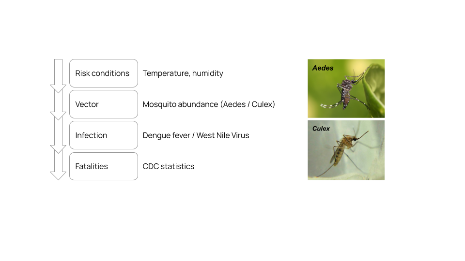

Objective
Risk condition from climate > Precense of vectors > Infection > Mortality > Countermeasures
Thermal biology to forecast pathogen transmission dynamics
Predict spatial and temporal spread of vector borne pathogen transmission
The two most important abiotic factors of disease are temperature and water availability, which determine the abundance and distribution of arthropod vectors [Brown 2023]. Evidence suggests desiccation contributes to the decline of mosquito-borne pathogen transmission at warmer temperatures.
There is a range of temperatures where mosquitos achieve high transmission potential. Forecast
- Temperature
- Humidity
- Relative humidity
- UV Radiation
- Water stress
- Human-mediated environmental change
The Aedes species of mosquito requires
- 8 months of drying out
- ??
References
- Brown, Joel J., Mercedes Pascual, Michael C. Wimberly, Leah R. Johnson, and Courtney C. Murdock. "Humidity–The overlooked variable in the thermal biology of mosquito‐borne disease." Ecology letters 26, no. 7 (2023): 1029-1049. https://doi.org/10.1111/ele.14228
- Risk conditions National Oceanic and Atmospheric Administration, National Centers for Environmental Information, Climate Data Online (CDO), provides free access to NCDC's archive of global historical weather and climate data in addition to station history information. These data include quality controlled daily, monthly, seasonal, and yearly measurements of temperature, precipitation, wind, and degree days as well as radar data and 30-year Climate Normals. Customers can also order most of these data as certified hard copies for legal use.
- Climate at a Glance County Mapping | County Palmer Z-Index https://www.ncei.noaa.gov/access/monitoring/climate-at-a-glance/county/mapping/110/zndx/202308/3/value
- Climate at a Glance Divisional Mapping https://www.ncei.noaa.gov/access/monitoring/climate-at-a-glance/county/mapping
- CDC Dengue Historic Data (2010-2023) https://www.cdc.gov/dengue/data-research/facts-stats/historic-data.html
- CDC West Nile Virus Historic Data (1999-2023) https://www.cdc.gov/west-nile-virus/data-maps/historic-data.html
- Dengue counts per county
- West Nile total of Reported human cases, Neuroinvasive disease cases, and Identified by Blood Donor Screening per county
- Palmer Z-Index - gray is drought, green is wet.

The making of the map.
Objective:
Overlay the climate and infection data for Dengue and West Nile virus in the US.
Tasks:
- Workspace Set-up: Establish a folder structure for this project
and sync with a public GitHub repository. The repository contains
the source data downloaded from primary sources as cited,
code to process the data (python), and
code to create the website (html, css, and js). GitHub pages serve the site.
https://github.com/jesnyder/scopesI
- Define Each US County:
Download a geoJSON file describing the shape of each US county
https://eric.clst.org/tech/usgeojson/
- Heatmap Climate Data: March - August 2023 Contiguous U.S. County Palmer Z-Index
https://www.ncei.noaa.gov/access/monitoring/climate-at-a-glance/county/mapping/110/zndx/202308/6/value">https://www.ncei.noaa.gov/access/monitoring/climate-at-a-glance/county/mapping/110/zndx/202308/6/value
Coregister the downloaded National Centers for Environmental Information with geographic description of the
US county using the countyFID as a common idenifier.
Create a .js file where a unique variable is set equal to the county geoJSON with the cdc statistics.
- Heatmap CDC Statistics per US County:
https://www.cdc.gov/dengue/data-research/facts-stats/historic-data.html">https://www.cdc.gov/dengue/data-research/facts-stats/historic-data.html
Coregister the downloaded CDC Statistics with geographic description of the
US county using the countyFID as a common idenifier.
Create a .js file where a unique variable is set equal to the county geoJSON with the cdc statistics.
- [Future Option] Map Treatment Capacity or Therapeutic Production:
Download the US FDA inspection records to identify production hubs of therapeutics used to treat Dengue and West Nile.
Filter the results online before downloading.
https://datadashboard.fda.gov/ora/cd/inspections.htm
- Serve the Website:
Build the interactive website.
Leverage Leaflet tutorials to write the html, css, and js to build the website
using the county data coregistered with cdc statistics and the
fda facility list as a series of points.
The Leaflet Interactive Choropleth Map is especially helpful.
https://leafletjs.com/examples/choropleth/
On github, setup a Pages to serve the website from the docs file of the repo.
https://jesnyder.github.io/scopesI/